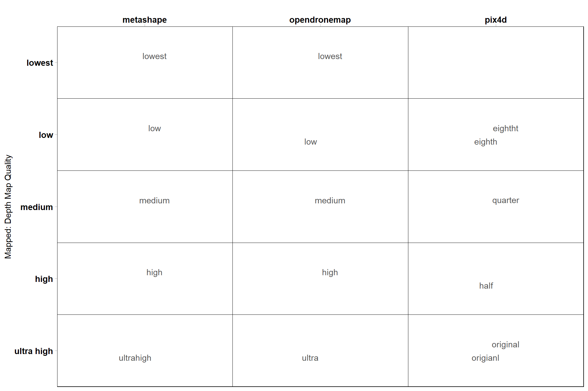

Section 4 Point Cloud Generation and Processing
4.1 SfM Image Processing Data
We tracked the photogrammetry (SfM) data generation processing times across the software platforms. Bring in this data and combine it as it has slightly different structure. The software packages were all run on different machines which means we need to figure out a way to standardize the image processing time to compare across software.
Load the file with ODM and Pix4D image processing data
odm_pix_temp =
readr::read_csv("../data/sfm_processing_time.csv") %>%
dplyr::rename_with(~ .x %>%
stringr::str_squish() %>%
str_remove_all("[[:punct:]]") %>%
stringr::str_replace_all("\\s","_") %>%
tolower()
) %>%
# map the processing parameters to the columns in our current data str
dplyr::mutate(
software = software %>%
stringr::str_remove_all("\\s") %>%
toupper()
, processing_attribute1 = dplyr::case_when(
software == "PIX4D" ~ keypoint_image_scale
, T ~ depth_map_quality
)
, processing_attribute2 = dplyr::case_when(
software == "PIX4D" ~ depth_map_quality
, T ~ filtering_mode
)
, processing_attribute3 = dplyr::case_when(
software == "PIX4D" ~ filtering_mode
, T ~ as.character(NA)
)
) %>%
# clean the data
dplyr::mutate(
dplyr::across(
tidyselect::starts_with("processing_attribute")
, ~ .x %>%
stringr::str_remove_all("\\s") %>%
toupper()
)
, site = site %>%
stringr::str_squish() %>%
stringr::str_replace_all("\\s","_") %>%
stringr::str_replace_all("[^[:alnum:]]","_") %>%
toupper()
) %>%
# filter pix4d for only original
dplyr::filter(
dplyr::case_when(
tolower(software) == "pix4d" & tolower(processing_attribute1) == "original" ~ T
, tolower(software) != "pix4d" ~ T
, T ~ F
) == T
) %>%
dplyr::mutate(
# temporary
qqq = dplyr::case_when(
tolower(software) == "pix4d" ~ processing_attribute2
, T ~ processing_attribute1
)
, fff = dplyr::case_when(
tolower(software) == "pix4d" ~ processing_attribute3
, T ~ processing_attribute2
)
) %>%
dplyr::rename(
study_site = site
, total_sfm_time_min = total_generation_time_min
, number_of_points_sfm = pc_total_number
) %>%
# select columns we need for joining
dplyr::select(
software
, study_site
, total_sfm_time_min
, number_of_points_sfm
, qqq
, fff
) clean up the metashape image processing data and combine with odm and pix4d
# clean up the metashape image processing data and combine with odm and pix4d
ms_temp = readr::read_csv("../data/metashape_processing_data.csv")
sfm_comb_temp = ms_temp %>%
dplyr::mutate(
software = toupper("metashape")
, total_sfm_time_min =
total_dense_point_cloud_processing_time_mins +
total_sparse_point_cloud_processing_time_mins
, number_of_points_sfm = dense_point_cloud_points
, qqq = depth_maps_generation_quality
, fff = depth_maps_generation_filtering_mode
) %>%
dplyr::select(names(odm_pix_temp)) %>%
dplyr::bind_rows(odm_pix_temp) %>%
# map quality and filtering to match above
dplyr::mutate(
# mapping
depth_maps_generation_quality = dplyr::case_when(
tolower(qqq) %in% c("ultrahigh", "ultra", "original", "origianl") ~ "ultra high"
, tolower(qqq) %in% c("half") ~ "high"
, tolower(qqq) %in% c("quarter") ~ "medium"
, tolower(qqq) %in% c("eighth","eightht") ~ "low"
, T ~ tolower(qqq)
) %>%
factor(
ordered = TRUE
, levels = c(
"lowest"
, "low"
, "medium"
, "high"
, "ultra high"
)
) %>% forcats::fct_rev()
, depth_maps_generation_filtering_mode = dplyr::case_when(
tolower(fff) %in% c("high") &
tolower(software) %in% c("opendronemap") ~ "disabled"
, tolower(fff) %in% c("high")
& tolower(software) %in% c("pix4d") ~ "disabled"
, tolower(fff) %in% c("medium")
& tolower(software) %in% c("opendronemap") ~ "mild"
, tolower(fff) %in% c("optimal")
& tolower(software) %in% c("pix4d") ~ "mild"
, tolower(fff) %in% c("low")
& tolower(software) %in% c("opendronemap") ~ "moderate"
, tolower(fff) %in% c("low")
& tolower(software) %in% c("pix4d") ~ "moderate"
, tolower(fff) %in% c("lowest")
& tolower(software) %in% c("opendronemap") ~ "aggressive"
, T ~ tolower(fff)
) %>%
factor(
ordered = TRUE
, levels = c(
"disabled"
, "mild"
, "moderate"
, "aggressive"
)
) %>% forcats::fct_rev()
) %>%
dplyr::select(-c(qqq,fff)) %>%
# keep only one thing record
dplyr::group_by(
software, study_site, depth_maps_generation_quality, depth_maps_generation_filtering_mode
) %>%
dplyr::filter(dplyr::row_number()==1) %>%
dplyr::ungroup()What?
## Rows: 342
## Columns: 6
## $ software <chr> "METASHAPE", "METASHAPE", "METASHâ¦
## $ study_site <chr> "KAIBAB_HIGH", "KAIBAB_HIGH", "KAâ¦
## $ total_sfm_time_min <dbl> 209.600000, 232.600000, 206.60000â¦
## $ number_of_points_sfm <dbl> 225918417, 305690646, 295828394, â¦
## $ depth_maps_generation_quality <ord> ultra high, ultra high, ultra higâ¦
## $ depth_maps_generation_filtering_mode <ord> aggressive, moderate, mild, disabâ¦4.2 R Point Cloud Processing Data
The point cloud files (.las|.laz files) exported by the SfM software platforms (Metashape, Pix4D, and OpenDroneMap) were processed in R using the process outlined in the manuscript and implemented via the cloud2trees() function from the cloud2trees package by Woolsey and Tinkham (2024). This process was completed for all 260 data sets to be analyzed based on the different combinations of SfM parameter settings tested (100 from both Metashape and OpenDroneMap and 60 from Pix4D).
We saved the processed data in the directory which we call ptcld_processing_dir in the code below organized as ptcld_processing_dir/software/study_site/parameter1_parameter2.csv where parameter1 and parameter2 are the SfM algorithm parameter settings (e.g. dense cloud generation quality and filtering mode). The processing tracking data file is used to compare summary statistics on point cloud processing times and densities.
For comparison across software, the SfM point cloud generation processing parameters are mapped to the Metashape parameters based on the Pix4D documentation, the OpenDroneMap documentation, and the Agisoft Metashape discussion board
### get tracking data
# read list of all processed tracking files
tracking_list_df =
dplyr::tibble(
file_full_path = list.files(
ptcld_processing_dir
, pattern = ".*_processed_tracking_data\\.csv$"
, full.names = T, recursive = T
) %>%
normalizePath()
) %>%
# get the software used
dplyr::mutate(
file_full_path %>%
toupper() %>%
stringr::str_extract_all(pattern = paste(toupper(software_list),collapse = "|"), simplify = T) %>%
dplyr::as_tibble() %>%
tidyr::unite(col = "software", sep = " ", na.rm = T)
) %>%
# filter processed tracking files
dplyr::mutate(
software = software %>% stringr::word(-1)
, study_site = file_full_path %>%
toupper() %>%
stringr::str_extract(pattern = paste(toupper(study_site_list),collapse = "|"))
, file_name = file_full_path %>%
basename() %>%
stringr::word(1, sep = fixed(".")) %>%
toupper() %>%
stringr::str_remove_all("_PROCESSED_TRACKING_DATA")
) %>%
dplyr::filter(
!is.na(study_site)
& study_site %in% toupper(study_site_list)
& !is.na(software)
& software %in% toupper(software_list)
) %>%
# keep only unique files for processing
dplyr::group_by(software, study_site, file_name) %>%
dplyr::filter(dplyr::row_number()==1) %>%
dplyr::ungroup() %>%
dplyr::rename(tracking_file_full_path = file_full_path)What? Here, there are 500 files because we also created data using image alignment other than âOriginalâ in Pix4D but keep only the âOriginalâ files for final analysis.
## Rows: 500
## Columns: 4
## $ tracking_file_full_path <chr> "E:\\SfM_Software_Comparison\\Metashape\\pointâ¦
## $ software <chr> "METASHAPE", "METASHAPE", "METASHAPE", "METASHâ¦
## $ study_site <chr> "KAIBAB_HIGH", "KAIBAB_HIGH", "KAIBAB_HIGH", "â¦
## $ file_name <chr> "HIGH_AGGRESSIVE", "HIGH_DISABLED", "HIGH_MILDâ¦read each tracking data file, bind rows
# read each tracking data file, bind rows
ptcld_processing_data = 1:nrow(tracking_list_df) %>%
purrr::map(function(row_n){
tracking_list_df %>%
dplyr::filter(dplyr::row_number() == row_n) %>%
dplyr::bind_cols(
read.csv(tracking_list_df$tracking_file_full_path[row_n])
)
}) %>%
dplyr::bind_rows()What?
## Rows: 500
## Columns: 26
## $ tracking_file_full_path <chr> "E:\\SfM_Software_Comparison\\Metasâ¦
## $ software <chr> "METASHAPE", "METASHAPE", "METASHAPâ¦
## $ study_site <chr> "KAIBAB_HIGH", "KAIBAB_HIGH", "KAIBâ¦
## $ file_name <chr> "HIGH_AGGRESSIVE", "HIGH_DISABLED",â¦
## $ number_of_points <int> 52974294, 72549206, 69858217, 69825â¦
## $ las_area_m2 <dbl> 86661.27, 87175.42, 86404.78, 86413â¦
## $ timer_tile_time_mins <dbl> 0.63600698, 2.49318542, 0.84133803,â¦
## $ timer_class_dtm_norm_chm_time_mins <dbl> 3.6559556, 5.3289152, 5.1638296, 5.â¦
## $ timer_treels_time_mins <dbl> 8.9065272, 19.2119663, 12.3391793, â¦
## $ timer_itd_time_mins <dbl> 0.02202115, 0.02449968, 0.03798440,â¦
## $ timer_competition_time_mins <dbl> 0.10590740, 0.17865245, 0.12124869,â¦
## $ timer_estdbh_time_mins <dbl> 0.02290262, 0.02382533, 0.02199170,â¦
## $ timer_silv_time_mins <dbl> 0.012565533, 0.015940932, 0.0150339â¦
## $ timer_total_time_mins <dbl> 13.361886, 27.276985, 18.540606, 17â¦
## $ sttng_input_las_dir <chr> "D:/Metashape_Testing_2024", "D:/Meâ¦
## $ sttng_use_parallel_processing <lgl> FALSE, FALSE, FALSE, FALSE, FALSE, â¦
## $ sttng_desired_chm_res <dbl> 0.25, 0.25, 0.25, 0.25, 0.25, 0.25,â¦
## $ sttng_max_height_threshold_m <int> 60, 60, 60, 60, 60, 60, 60, 60, 60,â¦
## $ sttng_minimum_tree_height_m <int> 2, 2, 2, 2, 2, 2, 2, 2, 2, 2, 2, 2,â¦
## $ sttng_dbh_max_size_m <int> 2, 2, 2, 2, 2, 2, 2, 2, 2, 2, 2, 2,â¦
## $ sttng_local_dbh_model <chr> "rf", "rf", "rf", "rf", "rf", "rf",â¦
## $ sttng_user_supplied_epsg <lgl> NA, NA, NA, NA, NA, NA, NA, NA, NA,â¦
## $ sttng_accuracy_level <int> 2, 2, 2, 2, 2, 2, 2, 2, 2, 2, 2, 2,â¦
## $ sttng_pts_m2_for_triangulation <int> 20, 20, 20, 20, 20, 20, 20, 20, 20,â¦
## $ sttng_normalization_with <chr> "triangulation", "triangulation", "â¦
## $ sttng_competition_buffer_m <int> 5, 5, 5, 5, 5, 5, 5, 5, 5, 5, 5, 5,â¦split file name to get processing attributes
# split file name to get processing attributes
ptcld_processing_data =
ptcld_processing_data %>%
tidyr::separate_wider_delim(
cols = file_name
, delim = "_"
, names = paste0(
"processing_attribute"
, 1:(max(stringr::str_count(ptcld_processing_data$file_name, "_"))+1)
)
, too_few = "align_start"
, cols_remove = F
) %>%
# not sure how to map processing attributes for pix4d and opendronemap ??????????????
dplyr::mutate(
# temporary
qqq = dplyr::case_when(
tolower(software) == "pix4d" ~ processing_attribute2
, T ~ processing_attribute1
)
, fff = dplyr::case_when(
tolower(software) == "pix4d" ~ processing_attribute3
, T ~ processing_attribute2
)
# mapping
, depth_maps_generation_quality = dplyr::case_when(
tolower(qqq) %in% c("ultrahigh", "ultra", "original", "origianl") ~ "ultra high"
, tolower(qqq) %in% c("half") ~ "high"
, tolower(qqq) %in% c("quarter") ~ "medium"
, tolower(qqq) %in% c("eighth","eightht") ~ "low"
, T ~ tolower(qqq)
) %>%
factor(
ordered = TRUE
, levels = c(
"lowest"
, "low"
, "medium"
, "high"
, "ultra high"
)
) %>% forcats::fct_rev()
, depth_maps_generation_filtering_mode = dplyr::case_when(
tolower(fff) %in% c("high") &
tolower(software) %in% c("opendronemap") ~ "disabled"
, tolower(fff) %in% c("high")
& tolower(software) %in% c("pix4d") ~ "disabled"
, tolower(fff) %in% c("medium")
& tolower(software) %in% c("opendronemap") ~ "mild"
, tolower(fff) %in% c("optimal")
& tolower(software) %in% c("pix4d") ~ "mild"
, tolower(fff) %in% c("low")
& tolower(software) %in% c("opendronemap") ~ "moderate"
, tolower(fff) %in% c("low")
& tolower(software) %in% c("pix4d") ~ "moderate"
, tolower(fff) %in% c("lowest")
& tolower(software) %in% c("opendronemap") ~ "aggressive"
, T ~ tolower(fff)
) %>%
factor(
ordered = TRUE
, levels = c(
"disabled"
, "mild"
, "moderate"
, "aggressive"
)
) %>% forcats::fct_rev()
)what have we done?
## Rows: 500
## Columns: 33
## $ tracking_file_full_path <chr> "E:\\SfM_Software_Comparison\\Metâ¦
## $ software <chr> "METASHAPE", "METASHAPE", "METASHâ¦
## $ study_site <chr> "KAIBAB_HIGH", "KAIBAB_HIGH", "KAâ¦
## $ processing_attribute1 <chr> "HIGH", "HIGH", "HIGH", "HIGH", "â¦
## $ processing_attribute2 <chr> "AGGRESSIVE", "DISABLED", "MILD",â¦
## $ processing_attribute3 <chr> NA, NA, NA, NA, NA, NA, NA, NA, Nâ¦
## $ file_name <chr> "HIGH_AGGRESSIVE", "HIGH_DISABLEDâ¦
## $ number_of_points <int> 52974294, 72549206, 69858217, 698â¦
## $ las_area_m2 <dbl> 86661.27, 87175.42, 86404.78, 864â¦
## $ timer_tile_time_mins <dbl> 0.63600698, 2.49318542, 0.8413380â¦
## $ timer_class_dtm_norm_chm_time_mins <dbl> 3.6559556, 5.3289152, 5.1638296, â¦
## $ timer_treels_time_mins <dbl> 8.9065272, 19.2119663, 12.3391793â¦
## $ timer_itd_time_mins <dbl> 0.02202115, 0.02449968, 0.0379844â¦
## $ timer_competition_time_mins <dbl> 0.10590740, 0.17865245, 0.1212486â¦
## $ timer_estdbh_time_mins <dbl> 0.02290262, 0.02382533, 0.0219917â¦
## $ timer_silv_time_mins <dbl> 0.012565533, 0.015940932, 0.01503â¦
## $ timer_total_time_mins <dbl> 13.361886, 27.276985, 18.540606, â¦
## $ sttng_input_las_dir <chr> "D:/Metashape_Testing_2024", "D:/â¦
## $ sttng_use_parallel_processing <lgl> FALSE, FALSE, FALSE, FALSE, FALSEâ¦
## $ sttng_desired_chm_res <dbl> 0.25, 0.25, 0.25, 0.25, 0.25, 0.2â¦
## $ sttng_max_height_threshold_m <int> 60, 60, 60, 60, 60, 60, 60, 60, 6â¦
## $ sttng_minimum_tree_height_m <int> 2, 2, 2, 2, 2, 2, 2, 2, 2, 2, 2, â¦
## $ sttng_dbh_max_size_m <int> 2, 2, 2, 2, 2, 2, 2, 2, 2, 2, 2, â¦
## $ sttng_local_dbh_model <chr> "rf", "rf", "rf", "rf", "rf", "rfâ¦
## $ sttng_user_supplied_epsg <lgl> NA, NA, NA, NA, NA, NA, NA, NA, Nâ¦
## $ sttng_accuracy_level <int> 2, 2, 2, 2, 2, 2, 2, 2, 2, 2, 2, â¦
## $ sttng_pts_m2_for_triangulation <int> 20, 20, 20, 20, 20, 20, 20, 20, 2â¦
## $ sttng_normalization_with <chr> "triangulation", "triangulation",â¦
## $ sttng_competition_buffer_m <int> 5, 5, 5, 5, 5, 5, 5, 5, 5, 5, 5, â¦
## $ qqq <chr> "HIGH", "HIGH", "HIGH", "HIGH", "â¦
## $ fff <chr> "AGGRESSIVE", "DISABLED", "MILD",â¦
## $ depth_maps_generation_quality <ord> high, high, high, high, low, low,â¦
## $ depth_maps_generation_filtering_mode <ord> aggressive, disabled, mild, moderâ¦what is this mapping?
# quality
ptcld_processing_data %>%
dplyr::count(depth_maps_generation_quality, qqq, software) %>%
ggplot(aes(x = tolower(software), y = depth_maps_generation_quality, label = tolower(qqq))) +
geom_tile(fill = NA, color = "black") +
ggrepel::geom_text_repel(color = "gray33") +
labs(y = "Mapped: Depth Map Quality", x = "") +
scale_x_discrete(position = "top") +
coord_cartesian(expand = F) +
theme_light() +
theme(
panel.grid = element_blank()
, axis.text = element_text(size = 11, face = "bold", color = "black")
, panel.border = element_rect(color = "black")
)
notice the spelling errors in the file namesâ¦manual file naming can be a dangerous game to play.
# filtering
ptcld_processing_data %>%
dplyr::count(depth_maps_generation_filtering_mode, fff, software) %>%
ggplot(aes(x = tolower(software), y = depth_maps_generation_filtering_mode, label = tolower(fff))) +
geom_tile(fill = NA, color = "black") +
ggrepel::geom_text_repel(color = "gray33") +
labs(y = "Mapped: Filtering Mode", x = "") +
scale_x_discrete(position = "top") +
coord_cartesian(expand = F) +
theme_light() +
theme(
panel.grid = element_blank()
, axis.text = element_text(size = 11, face = "bold", color = "black")
, panel.border = element_rect(color = "black")
)letâs filter out those extra Pix4D data sets
4.3 Summary of Data Generation and Processing
join the SfM data generation to the processing data which weâll use to build our full analysis data set and create the normalized processing time using Min-Max normalization.
ptcld_processing_data = ptcld_processing_data %>%
dplyr::left_join(
sfm_comb_temp
, by = dplyr::join_by(
software, study_site, depth_maps_generation_quality, depth_maps_generation_filtering_mode
)
) %>%
# create the standardized time by software since the processing machine varied by software
dplyr::group_by(software) %>%
dplyr::mutate(
total_sfm_time_norm = (total_sfm_time_min-min(total_sfm_time_min, na.rm = T)) /
(max(total_sfm_time_min, na.rm = T)-min(total_sfm_time_min, na.rm = T))
) %>%
dplyr::ungroup()4.3.1 Number of files summary
ptcld_processing_data %>%
dplyr::count(software, depth_maps_generation_quality, depth_maps_generation_filtering_mode) %>%
ggplot(mapping = aes(
y = depth_maps_generation_quality
, x = depth_maps_generation_filtering_mode
, fill = n
, label = n
)) +
geom_tile(color = "white") +
geom_text(color = "white", size = 3) +
facet_grid(cols = vars(software)) +
scale_x_discrete(expand = c(0, 0)) +
scale_y_discrete(expand = c(0, 0)) +
scale_fill_viridis_c(option = "mako", direction=-1, begin = 0.2, end = 0.8) +
labs(
x = "filtering mode"
, y = "depth map quality"
, fill = "number of sites"
) +
theme_light() +
theme(
legend.position = "none"
, axis.text.x = element_text(angle = 90, vjust = 0.5, hjust = 1)
, panel.background = element_blank()
, panel.grid = element_blank()
, plot.subtitle = element_text(hjust = 0.5)
, strip.text = element_text(color = "black", face = "bold")
)
4.3.2 R Processing Time Summary
Total processing time by depth map generation quality and depth map filtering mode
ptcld_processing_data %>%
ggplot(
mapping = aes(
x = depth_maps_generation_quality
, y = timer_total_time_mins
, color = depth_maps_generation_filtering_mode
, fill = depth_maps_generation_filtering_mode
)
) +
geom_boxplot(alpha = 0.6) +
scale_color_viridis_d(option = "plasma") +
scale_fill_viridis_d(option = "plasma") +
scale_y_log10(
labels = scales::comma_format(suffix = " mins", accuracy = 1)
, breaks = scales::breaks_log(n = 9)
) +
labs(
color = "Filtering Mode"
, fill = "Filtering Mode"
, y = "Point Cloud Total Processing Time"
, x = "Quality"
, title = bquote(
bold("R") ~
"point cloud total processing time by depth map generation quality and filtering mode"
)
, caption = "*Note the log scale on the y-axis"
) +
theme_light() +
theme(
legend.position = "top"
, legend.direction = "horizontal"
) +
guides(
color = guide_legend(override.aes = list(shape = 15, size = 6, alpha = 0.9))
)
Notice there are some outlier study sites in the point cloud processing time
ptcld_processing_data %>%
ggplot(
mapping = aes(
y = timer_total_time_mins
, x = depth_maps_generation_quality
, color = depth_maps_generation_filtering_mode
)
) +
geom_point(size = 3, alpha = 0.8) +
facet_grid(
cols = vars(study_site)
, labeller = label_wrap_gen(width = 35, multi_line = TRUE)
) +
scale_color_viridis_d(option = "plasma") +
scale_y_log10(
labels = scales::comma_format(suffix = " mins", accuracy = 1)
, breaks = scales::breaks_log(n = 9)
) +
labs(
color = "Filtering Mode"
, y = "Point Cloud Total Processing Time"
, x = "Quality"
, title = bquote(
bold("R") ~
"point cloud total processing time by depth map generation quality and filtering mode"
)
, subtitle = "by Study Site"
, caption = "*Note the log scale on the y-axis"
) +
theme_light() +
theme(
legend.position = "top"
, legend.direction = "horizontal"
, strip.text = element_text(color = "black", face = "bold")
, axis.text.x = element_text(angle = 90)
) +
guides(
color = guide_legend(override.aes = list(shape = 15, size = 6, alpha = 0.9))
)
4.3.3 R Processing Time vs # Points
ptcld_processing_data %>%
ggplot(
mapping = aes(
x = number_of_points
, y = timer_total_time_mins
)
) +
geom_point(alpha = 0.7, color = "navy") +
scale_y_log10(
labels = scales::comma_format(suffix = " mins", accuracy = 1)
, breaks = scales::breaks_log(n = 9)
) +
scale_x_log10(
labels = scales::comma_format(suffix = " M", scale = 1e-6, accuracy = 1)
, breaks = scales::breaks_log(n = 6)
) +
labs(
y = "Point Cloud Total Processing Time"
, x = "Dense Point Cloud # Points"
, title = bquote(
bold("R") ~
"point cloud total processing time versus dense point cloud number of points"
)
, caption = "*Note the log scale on both axes"
) +
theme_light()4.3.4 R Processing Section Timing
ptcld_processing_data %>%
dplyr::select(
depth_maps_generation_quality
, tidyselect::ends_with("_mins")
) %>%
dplyr::select(-c(timer_total_time_mins)) %>%
tidyr::pivot_longer(
cols = -c(depth_maps_generation_quality)
, names_to = "section"
, values_to = "mins"
) %>%
# dplyr::count(depth_maps_generation_quality, section)
dplyr::group_by(depth_maps_generation_quality, section) %>%
dplyr::summarise(med_mins = median(mins)) %>%
dplyr::group_by(depth_maps_generation_quality) %>%
dplyr::mutate(
total_mins = sum(med_mins)
, pct_mins = med_mins/total_mins
) %>%
dplyr::ungroup() %>%
dplyr::mutate(
section = section %>%
stringr::str_remove_all("timer_") %>%
stringr::str_remove_all("_time_mins") %>%
factor(
ordered = T
, levels = c(
"tile"
, "class_dtm_norm_chm"
, "treels"
, "itd"
, "estdbh"
, "competition"
, "silv"
## olde
# "tile"
# , "denoise"
# , "classify"
# , "dtm"
# , "normalize"
# , "chm"
# , "treels"
# , "itd"
# , "estdbh"
# , "competition"
# , "silv"
)
, labels = c(
"Tile"
, "Classify+Denoise+DTM+Normalize+CHM"
, "TreeLS SfM DBH"
, "CHM I.T.D."
, "Local DBH Est."
, "Tree Competition"
, "Silvicultural Metrics"
)
) %>% forcats::fct_rev()
) %>%
ggplot(
mapping = aes(x = pct_mins, y = depth_maps_generation_quality, fill=section, group=section)
) +
geom_col(
width = 0.7, alpha=0.8
) +
geom_text(
mapping = aes(
label = scales::percent(ifelse(pct_mins>=0.06,pct_mins,NA), accuracy = 1)
, fontface = "bold"
)
, position = position_stack(vjust = 0.5)
, color = "black", size = 4
) +
scale_fill_viridis_d(option = "turbo", begin = 0.1, end = 0.9) +
scale_x_continuous(labels = scales::percent_format()) +
labs(
fill = "R script\nsection"
, y = "depth map quality"
, x = "% Point Cloud Total Processing Time"
, title = bquote(
bold("R") ~
"point cloud total processing time by depth map generation quality and R script section"
)
, subtitle = "Median across software, study site, & depth map filtering mode "
) +
theme_light() +
theme(
legend.position = "top"
, legend.direction = "horizontal"
, legend.title = element_text(size=7)
, axis.title.x = element_text(size=10, face = "bold")
, axis.title.y = element_text(size = 8)
, axis.text.x = element_blank()
, axis.text.y = element_text(color = "black",size=10, face = "bold")
, axis.ticks.x = element_blank()
) +
guides(
fill = guide_legend(nrow = 3, byrow = T, reverse = T, override.aes = list(alpha = 0.9))
) 4.3.5 Summary of point cloud data
Use flight boundary to calculate the per ha metrics but all of the flight boundaries based on the SfM data are different ;Â so will just use the Metashape âhighâ quality area median across filtering modes applied to all.
4.3.5.1 Table
table_temp =
ptcld_processing_data %>%
dplyr::select(
# unique vars
software, tidyselect::starts_with("depth_maps"), study_site
# vars
, number_of_points, timer_total_time_mins
) %>%
# add area
dplyr::inner_join(
ptcld_processing_data %>%
dplyr::mutate(
las_area_m2 = dplyr::case_when(
tolower(software)=="metashape"
& tolower(depth_maps_generation_quality)=="high" ~ las_area_m2
, T ~ NA
)
) %>%
dplyr::group_by(study_site) %>%
dplyr::summarise(las_area_m2 = median(las_area_m2, na.rm = T))
, by = "study_site"
) %>%
# calculate per area metrics
dplyr::mutate(
number_of_points_m2 = number_of_points/las_area_m2
, timer_total_time_mins_ha = timer_total_time_mins/(las_area_m2/10000)
) %>%
# summary
dplyr::rename_with(
.fn = function(x){
x %>%
stringr::str_replace_all("depth_maps_generation_quality", "quality") %>%
stringr::str_replace_all("depth_maps_generation_filtering_mode", "filtering")
}
) %>%
# plot it?
# ggplot(mapping = aes(fill = software)) +
# geom_boxplot(mapping = aes(x = software, y = timer_total_time_mins_ha)) +
# facet_wrap(facets = vars(quality, filtering), ncol = 10) +
# scale_fill_viridis_d(option = "rocket", begin = 0.3, end = 0.9, drop = F) +
# scale_y_log10(
# labels = scales::comma_format(suffix = " mins", accuracy = 0.1)
# , breaks = scales::breaks_log(n = 9)
# ) +
# theme_light()
# or table it
dplyr::group_by(software, quality, filtering) %>%
dplyr::summarise(
dplyr::across(
c(number_of_points_m2, timer_total_time_mins_ha)
, .fns = list(mean = mean, sd = sd)
)
, n = dplyr::n()
) %>%
# combine mean/sd
dplyr::mutate(
pts = paste0(
number_of_points_m2_mean %>%
round(1) %>%
scales::comma(accuracy = 1)
, "<br>("
, number_of_points_m2_sd %>%
round(1) %>%
scales::comma(accuracy = 1)
, ")"
)
, mins = paste0(
timer_total_time_mins_ha_mean %>% round(1) %>% scales::comma(accuracy = 0.1)
, "<br>("
, timer_total_time_mins_ha_sd %>% round(1) %>% scales::comma(accuracy = 0.1)
, ")"
)
) %>%
dplyr::ungroup() %>%
select(software,quality,filtering,pts,mins)
table_temp =
dplyr::bind_rows(
table_temp %>% dplyr::select(-c(mins)) %>% tidyr::pivot_wider(names_from = filtering, values_from = pts) %>%
dplyr::mutate(metric = "Points m<sup>-2</sup>")
, table_temp %>% dplyr::select(-c(pts)) %>% tidyr::pivot_wider(names_from = filtering, values_from = mins) %>%
dplyr::mutate(metric = "Processing time<br>mins ha<sup>-1</sup>")
) %>%
dplyr::relocate(software) %>%
dplyr::relocate(metric)
# table
table_temp %>%
kableExtra::kbl(escape = F) %>%
kableExtra::kable_styling() %>%
kableExtra::collapse_rows(columns = 1:2, valign = "top")| metric | software | quality | aggressive | moderate | mild | disabled |
|---|---|---|---|---|---|---|
| Points m-2 | METASHAPE | ultra high |
3,546 (1,444) |
4,446 (1,687) |
4,544 (1,801) |
4,597 (1,786) |
| high |
789 (296) |
972 (345) |
1,019 (378) |
1,028 (377) |
||
| medium |
183 (64) |
224 (76) |
238 (84) |
239 (84) |
||
| low |
43 (13) |
52 (17) |
57 (19) |
57 (20) |
||
| lowest |
11 (3) |
12 (4) |
13 (4) |
13 (4) |
||
| OPENDRONEMAP | ultra high |
1,684 (664) |
1,678 (603) |
1,557 (515) |
1,455 (566) |
|
| high |
421 (125) |
421 (128) |
418 (134) |
418 (133) |
||
| medium |
100 (32) |
100 (32) |
99 (33) |
100 (34) |
||
| low |
99 (32) |
100 (33) |
99 (33) |
100 (33) |
||
| lowest |
99 (31) |
100 (33) |
100 (32) |
99 (33) |
||
| PIX4D | ultra high | NA |
262 (84) |
934 (317) |
3,454 (1,185) |
|
| high | NA |
58 (24) |
217 (90) |
774 (318) |
||
| medium | NA |
14 (4) |
54 (16) |
193 (60) |
||
| low | NA |
4 (1) |
13 (4) |
47 (14) |
||
|
Processing time mins ha-1 |
METASHAPE | ultra high |
9.1 (4.4) |
13.3 (6.1) |
14.0 (6.2) |
17.5 (8.2) |
| high |
2.2 (0.8) |
2.9 (0.9) |
3.2 (1.2) |
4.3 (1.2) |
||
| medium |
0.9 (0.3) |
1.0 (0.3) |
1.0 (0.4) |
1.3 (0.4) |
||
| low |
0.3 (0.1) |
0.3 (0.1) |
0.3 (0.1) |
0.4 (0.1) |
||
| lowest |
0.1 (0.0) |
0.2 (0.0) |
0.2 (0.0) |
0.2 (0.0) |
||
| OPENDRONEMAP | ultra high |
2.8 (1.1) |
2.7 (1.0) |
2.4 (0.7) |
2.4 (0.9) |
|
| high |
0.7 (0.2) |
0.7 (0.2) |
0.7 (0.2) |
0.6 (0.2) |
||
| medium |
0.2 (0.1) |
0.2 (0.1) |
0.2 (0.1) |
0.2 (0.1) |
||
| low |
0.2 (0.1) |
0.2 (0.1) |
0.2 (0.1) |
0.2 (0.0) |
||
| lowest |
0.2 (0.1) |
0.2 (0.1) |
0.2 (0.1) |
0.2 (0.0) |
||
| PIX4D | ultra high | NA |
1.1 (0.4) |
3.8 (1.7) |
42.1 (31.0) |
|
| high | NA |
0.3 (0.1) |
0.9 (0.5) |
3.5 (1.6) |
||
| medium | NA |
0.1 (0.0) |
0.3 (0.1) |
0.8 (0.3) |
||
| low | NA |
0.1 (0.0) |
0.1 (0.0) |
0.3 (0.1) |
4.3.6 R Processing Summary
table_temp = ptcld_processing_data %>%
dplyr::select(
# unique vars
software, tidyselect::starts_with("depth_maps"), study_site
# vars
, number_of_points, timer_total_time_mins
) %>%
# add area
dplyr::inner_join(
ptcld_processing_data %>%
dplyr::mutate(
las_area_m2 = dplyr::case_when(
tolower(software)=="metashape"
& tolower(depth_maps_generation_quality)=="high" ~ las_area_m2
, T ~ NA
)
) %>%
dplyr::group_by(study_site) %>%
dplyr::summarise(las_area_m2 = median(las_area_m2, na.rm = T))
, by = "study_site"
) %>%
# calculate per area metrics
dplyr::mutate(
number_of_points_m2 = number_of_points/las_area_m2
, timer_total_time_mins_ha = timer_total_time_mins/(las_area_m2/10000)
) %>%
# summary
dplyr::rename_with(
.fn = function(x){
x %>%
stringr::str_replace_all("depth_maps_generation_quality", "quality") %>%
stringr::str_replace_all("depth_maps_generation_filtering_mode", "filtering")
}
)
# plot it?
p1_temp =
table_temp %>%
dplyr::mutate(quality = forcats::fct_rev(quality)) %>%
ggplot(mapping = aes(x = filtering, y = timer_total_time_mins_ha, fill = software)) +
geom_point(
mapping = aes(group=software, color = software)
, position = position_nudge(x = -0.4)
, alpha = 0.8
, shape = "-", size = 5
) +
geom_boxplot(
width = 0.7, alpha = 0.8
, position = position_dodge2(preserve = "single")
, outliers = F
) +
# set vertical lines between x groups
geom_vline(xintercept = seq(0.5, length(table_temp$filtering), by = 1), color="gray22", lwd=.5) +
facet_grid(cols = vars(quality)) +
scale_fill_viridis_d(option = "rocket", begin = 0.3, end = 0.9, drop = F) +
scale_color_viridis_d(option = "rocket", begin = 0.3, end = 0.9, drop = F) +
scale_y_log10(
labels = scales::comma_format(suffix = " mins", accuracy = 0.1)
, breaks = scales::breaks_log(n = 9)
) +
labs(
subtitle = "quality"
, y = latex2exp::TeX("Pt. Cld. Processing Time (mins $\\cdot ha^{-1}$)")
, x = "filtering mode"
) +
theme_light() +
theme(
legend.position = "bottom"
, legend.direction = "horizontal"
, panel.grid.major.x = element_blank()
, panel.grid.minor.x = element_blank()
, axis.text.x = element_text(angle = 90, vjust = 0.5, hjust = 1, size = 7)
, strip.text = element_text(color = "black", face = "bold")
, plot.subtitle = element_text(hjust = 0.5)
) +
guides(
fill = guide_legend(reverse = T, override.aes = list(alpha = 1, color = NA, shape = NA, lwd = NA))
, color = "none"
)
# plot it?
p2_temp =
table_temp %>%
dplyr::mutate(quality = forcats::fct_rev(quality)) %>%
ggplot(mapping = aes(x = filtering, y = number_of_points_m2, fill = software)) +
geom_point(
mapping = aes(group=software, color = software)
, position = position_nudge(x = -0.4)
, alpha = 0.8
, shape = "-", size = 5
) +
geom_boxplot(
width = 0.7, alpha = 0.8
, position = position_dodge2(preserve = "single")
, outliers = F
) +
# set vertical lines between x groups
geom_vline(xintercept = seq(0.5, length(table_temp$filtering), by = 1), color="gray22", lwd=.5) +
facet_grid(cols = vars(quality)) +
scale_fill_viridis_d(option = "rocket", begin = 0.3, end = 0.9, drop = F) +
scale_color_viridis_d(option = "rocket", begin = 0.3, end = 0.9, drop = F) +
scale_y_log10(
labels = scales::comma_format(accuracy = 1)
, breaks = scales::breaks_log(n = 9)
) +
labs(
subtitle = "quality"
, y = latex2exp::TeX("Point Density (points $\\cdot m^{-2}$)")
, x = "filtering mode"
) +
theme_light() +
theme(
legend.position = "bottom"
, legend.direction = "horizontal"
, panel.grid.major.x = element_blank()
, panel.grid.minor.x = element_blank()
, axis.text.x = element_text(angle = 90, vjust = 0.5, hjust = 1, size = 7)
, strip.text = element_text(color = "black", face = "bold")
, plot.subtitle = element_text(hjust = 0.5)
) +
guides(
fill = guide_legend(reverse = T, override.aes = list(alpha = 1, color = NA, shape = NA, lwd = NA))
, color = "none"
)
# combine plots
p2_temp / p1_temp + patchwork::plot_layout(guides = "collect") & theme(legend.position = "bottom")4.3.7 SfM image processing time summary
Because the SfM photogrammetry software were each run on different processing computers we need to normalize the processing time by software. SfM image processing time was normalized using Min-Max normalization as:
\[ x^{\prime}_{ij} = \frac{x_{ij}-x_{min[j]}}{x_{max[j]}-x_{min[j]}} \]
where \(i\) is the the study site observation within each software \(j\) where each software was implemented on a different computer.
ptcld_processing_data %>%
dplyr::group_by(software, depth_maps_generation_quality, depth_maps_generation_filtering_mode) %>%
dplyr::mutate(med = median(total_sfm_time_norm, na.rm = T)) %>%
dplyr::ungroup() %>%
dplyr::mutate(depth_maps_generation_quality = forcats::fct_rev(depth_maps_generation_quality)) %>%
ggplot(mapping = aes(
x = depth_maps_generation_filtering_mode
, y = total_sfm_time_norm
, fill = med
)) +
geom_boxplot(width = 0.7, outliers = F, fill = "slategray") +
facet_grid(
rows = vars(software)
, cols = vars(depth_maps_generation_quality)
) +
scale_fill_viridis_c(option = "mako", direction = -1, end = 0.9) +
scale_y_continuous(
limits = c(-0.02,1.02)
, breaks = c(0, 1)
, minor_breaks = seq(0.2,0.8,0.2)
, labels = c("min","max")
) +
labs(x = "filtering mode", y = "SfM Image Processing Time (normalized)",subtitle = "quality") +
theme_light() +
theme(
legend.position = "none"
, legend.direction = "horizontal"
, panel.grid.major.x = element_blank()
, panel.grid.minor.x = element_blank()
, panel.grid.major.y = element_line(color = "black")
, axis.ticks.y = element_blank()
, axis.text.x = element_text(angle = 90, vjust = 0.5, hjust = 1)
, strip.text = element_text(color = "black", face = "bold")
, plot.subtitle = element_text(hjust = 0.5)
)table it
table_temp =
ptcld_processing_data %>%
dplyr::group_by(software, depth_maps_generation_quality, depth_maps_generation_filtering_mode) %>%
dplyr::summarise(
dplyr::across(
total_sfm_time_norm
, .fns = list(mean = mean, sd = sd, min = min, max = max)
)
, n = dplyr::n()
) %>%
dplyr::mutate(
range = paste0(
total_sfm_time_norm_min %>% scales::number(accuracy = 0.01)
, "â"
, total_sfm_time_norm_max %>% scales::number(accuracy = 0.01)
)
, depth_maps_generation_quality = depth_maps_generation_quality %>% forcats::fct_rev()
) %>%
select(-c(n,total_sfm_time_norm_min, total_sfm_time_norm_max)) %>%
dplyr::ungroup() %>%
dplyr::arrange(software, depth_maps_generation_quality, depth_maps_generation_filtering_mode)
table_temp %>%
# dplyr::select(-c(software)) %>%
kableExtra::kbl(
digits = 2
, caption = "Normalized SfM Image Processing Time"
, col.names = c(
"software", "quality", "filtering mode"
, "Mean"
, "Std Dev", "Range"
)
, escape = F
) %>%
kableExtra::kable_styling() %>%
# kableExtra::pack_rows(index = table(forcats::fct_inorder(table_temp$software))) %>%
kableExtra::collapse_rows(columns = 1:2, valign = "top") %>%
kableExtra::scroll_box(height = "8in")| software | quality | filtering mode | Mean | Std Dev | Range |
|---|---|---|---|---|---|
| METASHAPE | lowest | aggressive | 0.00 | 0.00 | 0.00â0.01 |
| moderate | 0.00 | 0.00 | 0.00â0.01 | ||
| mild | 0.00 | 0.00 | 0.00â0.01 | ||
| disabled | 0.00 | 0.00 | 0.00â0.01 | ||
| low | aggressive | 0.01 | 0.01 | 0.00â0.02 | |
| moderate | 0.01 | 0.01 | 0.00â0.02 | ||
| mild | 0.01 | 0.01 | 0.00â0.02 | ||
| disabled | 0.01 | 0.01 | 0.00â0.02 | ||
| medium | aggressive | 0.04 | 0.02 | 0.02â0.06 | |
| moderate | 0.04 | 0.02 | 0.02â0.06 | ||
| mild | 0.04 | 0.02 | 0.02â0.05 | ||
| disabled | 0.04 | 0.02 | 0.02â0.06 | ||
| high | aggressive | 0.18 | 0.07 | 0.10â0.24 | |
| moderate | 0.18 | 0.06 | 0.10â0.23 | ||
| mild | 0.16 | 0.06 | 0.09â0.21 | ||
| disabled | 0.17 | 0.06 | 0.09â0.22 | ||
| ultra high | aggressive | 0.77 | 0.29 | 0.45â1.00 | |
| moderate | 0.78 | 0.28 | 0.46â1.00 | ||
| mild | 0.72 | 0.26 | 0.43â0.93 | ||
| disabled | 0.76 | 0.27 | 0.45â0.99 | ||
| OPENDRONEMAP | lowest | aggressive | 0.02 | 0.00 | 0.02â0.02 |
| moderate | 0.02 | 0.01 | 0.00â0.03 | ||
| mild | 0.05 | 0.00 | 0.04â0.05 | ||
| disabled | 0.11 | 0.02 | 0.08â0.14 | ||
| low | aggressive | 0.02 | 0.00 | 0.02â0.03 | |
| moderate | 0.03 | 0.00 | 0.02â0.03 | ||
| mild | 0.05 | 0.01 | 0.04â0.06 | ||
| disabled | 0.11 | 0.03 | 0.08â0.15 | ||
| medium | aggressive | 0.02 | 0.00 | 0.02â0.02 | |
| moderate | 0.02 | 0.00 | 0.02â0.03 | ||
| mild | 0.05 | 0.00 | 0.04â0.05 | ||
| disabled | 0.11 | 0.02 | 0.09â0.14 | ||
| high | aggressive | 0.09 | 0.01 | 0.08â0.10 | |
| moderate | 0.09 | 0.01 | 0.08â0.10 | ||
| mild | 0.12 | 0.01 | 0.10â0.13 | ||
| disabled | 0.18 | 0.03 | 0.14â0.22 | ||
| ultra high | aggressive | 0.71 | 0.08 | 0.61â0.80 | |
| moderate | 0.73 | 0.11 | 0.60â0.85 | ||
| mild | 0.79 | 0.09 | 0.66â0.90 | ||
| disabled | 0.86 | 0.13 | 0.69â1.00 | ||
| PIX4D | low | moderate | 0.00 | 0.00 | 0.00â0.01 |
| mild | 0.01 | 0.00 | 0.01â0.01 | ||
| disabled | 0.01 | 0.01 | 0.01â0.02 | ||
| medium | moderate | 0.01 | 0.01 | 0.00â0.02 | |
| mild | 0.02 | 0.00 | 0.01â0.02 | ||
| disabled | 0.04 | 0.01 | 0.02â0.05 | ||
| high | moderate | 0.02 | 0.01 | 0.01â0.03 | |
| mild | 0.06 | 0.02 | 0.03â0.08 | ||
| disabled | 0.18 | 0.07 | 0.12â0.28 | ||
| ultra high | moderate | 0.10 | 0.03 | 0.05â0.12 | |
| mild | 0.29 | 0.09 | 0.15â0.39 | ||
| disabled | 0.78 | 0.17 | 0.54â1.00 |